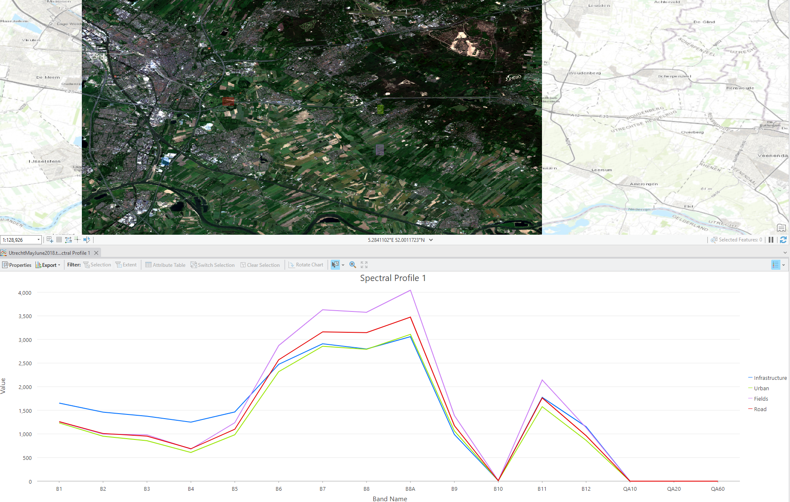
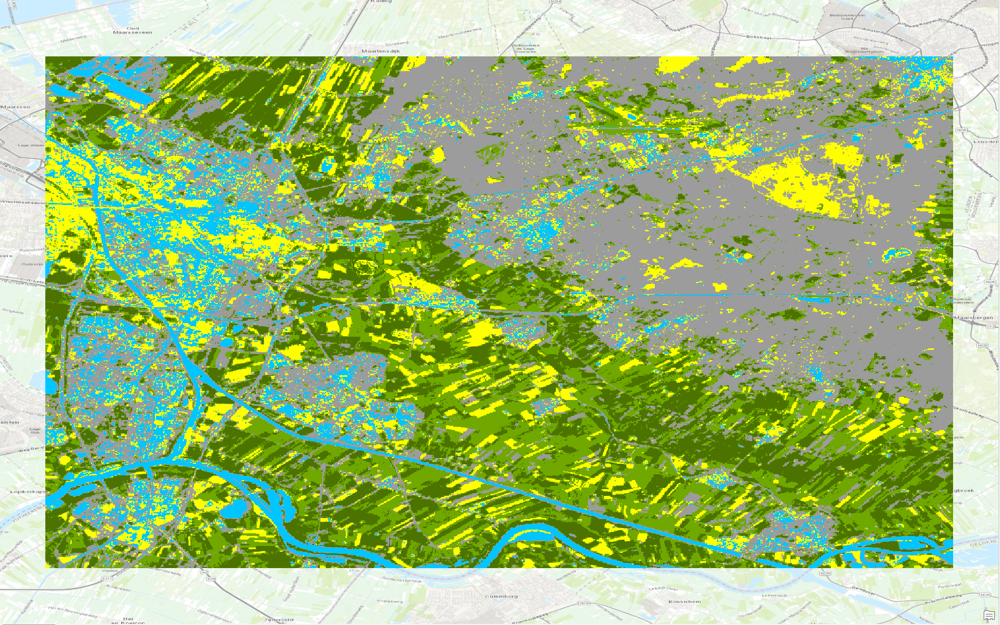
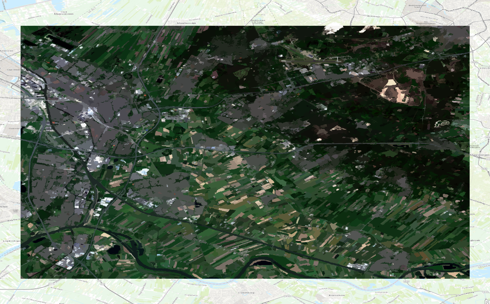
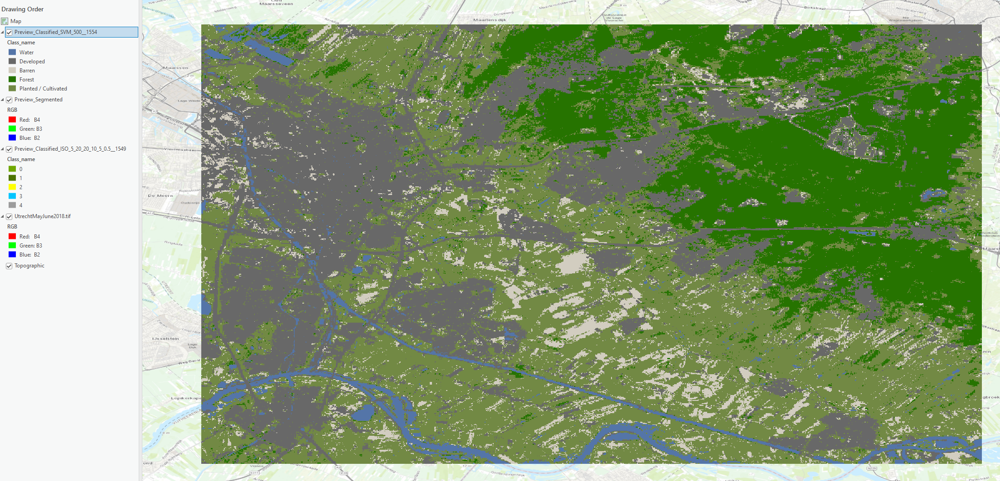

Landcover Classification
One of the applications of mapping is to determine the contents of a certain area. There are several ways to do this, some simpler than others. For this specific example, Utrecht was mapped using satellite imaging. With this base map, three models were run. The first model, pictured below, is unsupervised pixel-based. This means the program trained itself to recognize similar pixels in the map and then group them together. As shown in the image above, the different classes were then shaded and renamed in order to fit what they actually corresponded to.
The second model run was unsupervised object-based. This program is also self trained, but instead of joining similar pixels into one singular category, it shades objects of symilar colours together. This program, although more effective at correctly shading each category, is slightly harder to read, as it does not divide the shades into different categories. It is however the most true to life model out of all three used for this assignment. The final product preview is pictured just below.
The last model run was supervised pixel-based. This time, the program was not self trained. The areas were hand-selected according to each one of the available classes provided. This allowed the program to make a relationship between pixels and classes, which later creates a map similar to the unsupervised pixel-based model, only slightly more accurate. It takes more time to hand pick every area in order to train the program, but in the end it also provides better results.
